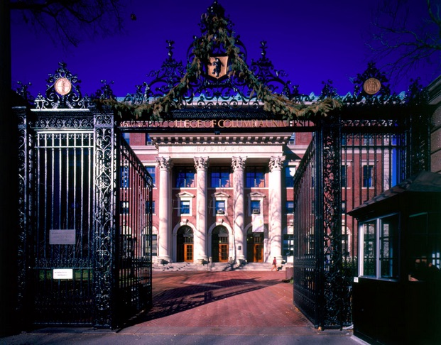

Welcome!
Thank you all for checking out my wesbite.This blog is intended for prospective students, current students, alumnae, family, friends, and strangers alike! I want to share my experience and thoughts about life at Barnard, life in New York City, and life as a nineteen-year-old woman living away from home for the first time and I hope you all enjoy!
